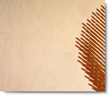

Microsoft entierra a Internet Explorer , geeks son felices tras decision

Microsoft produjo el popular navegador en agosto de 1995. Para el 2002 el Internet Explorer era usado por el 96% de las personas que visitaban la Web. Luego de 20 años de competir ante navegadores rivales, Microsoft finalmente prepara la salida del que una vez fuera el rey de la navegación en la web: el Internet Explorer.
Leer MásLa compañía
Anunció que el popular navegador, utilizado por el 96 por ciento de las personas que visitaban la web hace 10 años, será reemplazado por un nuevo navegador.
Leer MásLos problemas
Los problemas de seguridad y la falta de innovación en el Internet Explorer, minaron su popularidad y la competencia, sobre todo la del gigante Google, terminó con arrebatarle ese mercado.
Leer MásEl 'browser' Navegador

Sólo conserva un pobre ocho por ciento de las búsquedas totales en internet, actualmente, mientras que el nuevo rey es Chrome de Google, con el 62,5 por ciento, seguido por Firefox, con el 22,9 por ciento.
Leer MásMicrosoft
Se prepara para lanzar, junto a su nuevo sistema operativo Windows 10 que presentará este año, un nuevo navegador del que todavía no se conoce el nombre.
Leer MásSuscribete al Blog
Recibe actualizaciones sobre TECH BLOG
Lo mas popular
-
Microsoft entierra a Internet Explorer, Geeks son felices tras decisión
-
Nintendo compra Sony
-
Halo no logra suficientes milones de dolares para pagar sus servers
Alrededor de la web
-
Los sistemas operativos Windows Vista lanza su nueva version 2.1 al mercado europeo
microsoft -
Descubre una amplia gama de los mejores juegos para todos los gustos
xbox 360 -
Software y aplicaciones preinstalados utilizan una importante cantidad de espacio de la memoria interna.
nokia lumia 623 -
Presentamos Surface Pro 3. La tableta que puede reemplazar a tu portátil.
lenovo